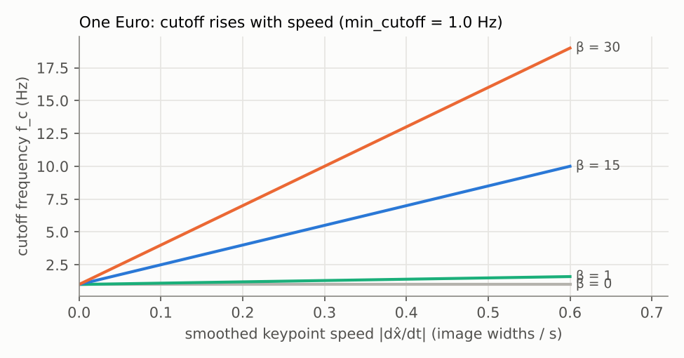

The One Euro (1€) Filter
4.1 Adaptive cutoff frequency
The 1€ filter was designed for noisy input in interactive systems such as mouse, touch and tracked-hand cursors, where users notice both jitter and lag [6]. Its authors point out that people tolerate jitter when moving fast and lag when moving slowly, but not the opposite. A pose skeleton drawn over a live camera image has the same property.
The filter is an EMA (Section 3.2) in which α is recomputed every frame from a cutoff frequency fc that depends on speed:
fc = fc,min + β · |dx̂k| α(fc) = 1 / (1 + τ/Te), τ = 1/(2π fc) x̂k = α·xk + (1−α)·x̂k−1The speed dx̂ is itself the output of a second, fixed EMA (cutoff dcutoff, usually 1 Hz) applied to the raw derivative (xk − x̂k−1)/Te. Without that inner filter the noisy derivative (Section 2.3) would make the cutoff jump around every frame.
Implementation
def smoothing_factor(te, cutoff):
tau = 1.0 / (2 * math.pi * cutoff)
return 1.0 / (1.0 + tau / te)
class OneEuro:
def __init__(self, min_cutoff=1.0, beta=0.0, d_cutoff=1.0):
self.min_cutoff, self.beta, self.d_cutoff = min_cutoff, beta, d_cutoff
self.x_prev, self.dx_prev, self.t_prev = None, 0.0, None
def filter(self, x, t):
if self.x_prev is None: # first sample: pass through
self.x_prev, self.t_prev = x, t
return x
te = t - self.t_prev # real time step (handles dropped frames)
dx = (x - self.x_prev) / te # 1. raw speed
a_d = smoothing_factor(te, self.d_cutoff)
dx_hat = a_d * dx + (1 - a_d) * self.dx_prev # 2. smoothed speed
cutoff = self.min_cutoff + self.beta * abs(dx_hat) # 3. speed -> cutoff
a = smoothing_factor(te, cutoff)
x_hat = a * x + (1 - a) * self.x_prev # 4. adaptive EMA
self.x_prev, self.dx_prev, self.t_prev = x_hat, dx_hat, t
return x_hatTo filter a skeleton, create one OneEuro per landmark per coordinate (66 for MediaPipe in 2D). The same code in JavaScript runs the Filter Lab.
4.2 Relationship between movement speed and smoothing

When the joint is still, |dx̂| ≈ 0 and fc = fc,min. At 30 fps with fc,min = 1 Hz, α ≈ 0.17, which is heavy smoothing. When the knee moves at 0.3 image widths per second with β = 15, fc rises to 5.5 Hz and α ≈ 0.53: the filter now follows the input closely. The filter is effectively choosing between "averaging" and "trusting the latest frame" based on how fast things are changing. In Figure 3.1 this is why the One Euro step response catches up faster than the EMA: the step itself is a fast movement, so the filter opens up.
4.3 Why it is useful for interactive and real-time pose tracking
- Causal and O(1). A few multiplications and one division per sample; it measured about 1.5 µs per update even in plain Python in our experiment, so 66 filters cost well under 1 ms per frame.
- Handles variable frame rate through Te, which matters on phones where inference time varies.
- Two intuitive knobs that map directly to the two complaints users make: "it shakes" (lower fc,min) and "it lags" (raise β).
- No motion model needed. Unlike a Kalman filter, it makes no assumption about how a body moves, so it does not overshoot when a movement stops suddenly.
Limitations: it is still a low-pass filter, so spikes pass through partially (a spike looks like a fast movement and actually raises the cutoff). It has no notion of confidence and no way to predict through a gap; those must be added around it (Section 6).
4.4 Parameter selection
The authors recommend a two-step procedure [6]:
- Set β = 0 and dcutoff = 1 Hz. Hold still or move slowly, and lower fc,min until jitter is acceptable while lag is still tolerable.
- Move fast and increase β until lag is acceptable. Start small and change by factors of 10.
Rule of thumb from the same source: if high-speed lag is the problem, increase β; if low-speed jitter is the problem, decrease fc,min.
For exercise videos, slow controlled movements (a tempo squat, a plank hold) let you use a low fc,min such as 0.5–1 Hz. Explosive movements (jump squats, kettlebell swings) need a larger β. Try it yourself in the Filter Lab.
Summary
- 1€ = EMA whose cutoff rises linearly with smoothed speed.
- fc,min controls jitter at rest; β controls lag during fast motion.
- Cheap, causal, frame-rate aware; does not handle spikes, confidence, or gaps by itself.